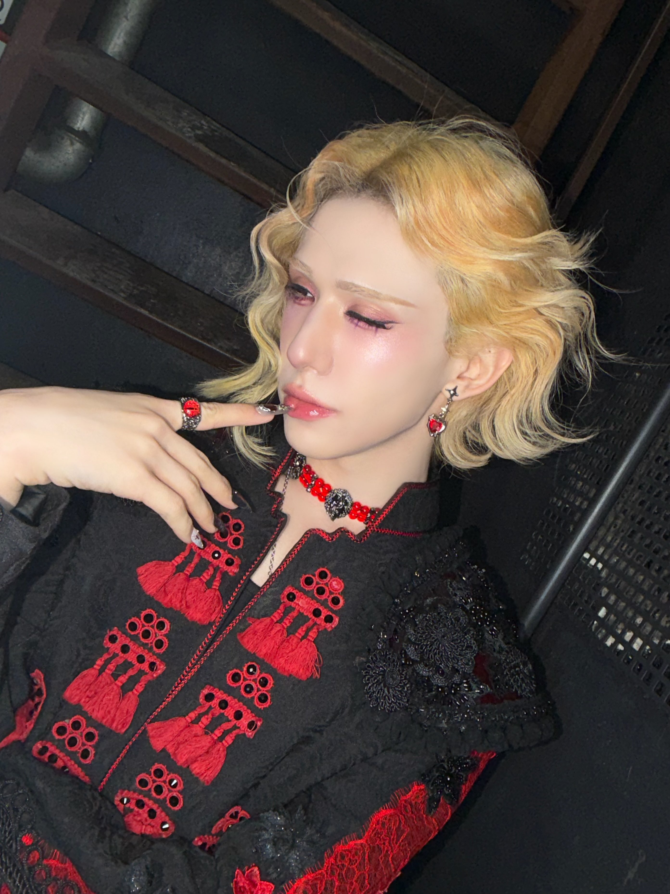

Position: Leader
Birthday: 07-07-1999
Nationality: Chinese
More info about Wumuti here... They have been a contestant on several South Korean survival shows, including Under Nineteen (2018), Boys Planet (2023), and Build Up: Vocal Boy Group Survivor (2024). They were also contestants on Chinese survival shows: The Dance and The Voice (2012), Road to Star (2014), and Super Idol (2015). Hidden talent is for example drawing. They were a trainee for 6 years and 4 months.